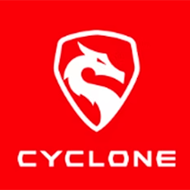
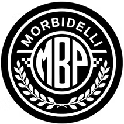
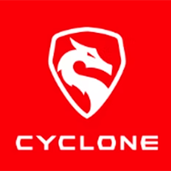
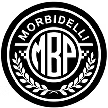

Concessionario ufficiale Suzuki, SYM, Beta, Honda, Benelli, Keeway, Cyclone, Benda, Morbidelli.
Maggiori informazioni →Riparazione di moto nuove ed usate, preparazioni ad hoc, mappature su banco BAPRO, centraline BAZZAZ e Rapid Bike, assistenza pista.
Maggiori informazioni →Ricambi originali per tutte le marche trattate. Caschi, giacche, tute, guanti, stivali e accessori delle migliori marche.
Maggiori informazioni →Soccorso stradale e assistenza autoveicoli su strada. Siamo pronti ad aiutarti in caso di emergenza.
Contattaci →Falaschi Moto si trova a Collesalvetti, in Via dell'Azalea 30/32. Siamo concessionari ufficiali Suzuki, SYM, Beta, Honda, Benelli, Keeway, Cyclone, Benda e Morbidelli.
La nostra officina è specializzata nella riparazione di qualsiasi moto o scooter, con servizi avanzati come mappature professionali su banco prova BAPRO, installazione centraline BAZZAZ e Rapid Bike, montaggio ammortizzatori Ohlins e assistenza in pista.
ContattaciVendita, officina, ricambi e accessori.
Lasciaci un messaggio e ti risponderemo entro 24 ore.
Lun: 10:00 – 13:00 / 16:00 – 20:00
Mar – Sab: 09:00 – 13:00 / 16:00 – 20:00
Domenica: chiuso
Mar – Sab: 09:00 – 13:00 / 16:00 – 20:00
Mar – Sab: 09:00 – 13:00 / 16:00 – 20:00